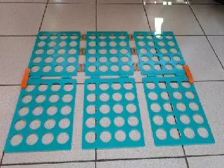

<div class="textcontainer">
<br></br>

<h3>Week 1: Final Project Proposal</h3>
<p class = "margin"></p>
Here are my 2 ideas for my final project
<p class = "margin"></p>
<h4>Idea 1 :A card dispenser</h4>
<p class = "margin"></p>
A card dispenser machine that distributes cards for games such as uno amongst players and also has a small screen that keeps a count of the number of cards inside and alerts you if there any missing cards.
<p class = "margin"></p>
<h4>Idea 2:A folding machine</h4>
<p class = "margin"></p>
Using an automatic or easier machine as a clothes folding machine.
<p class = "margin"></p>
</div>